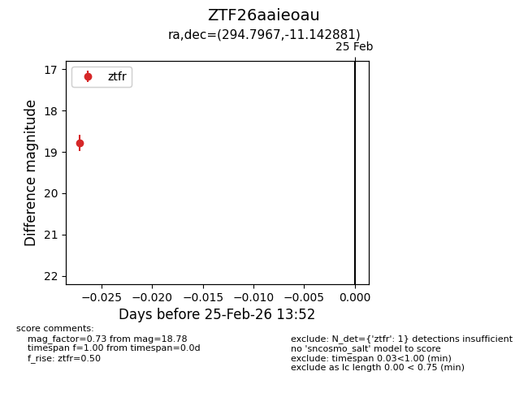
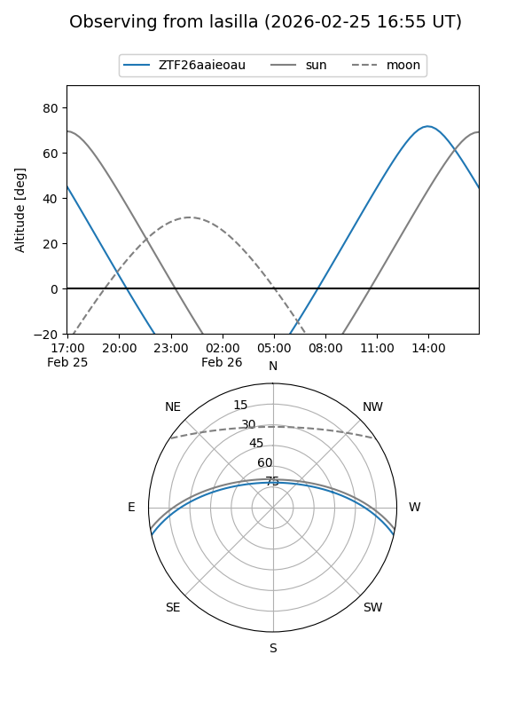
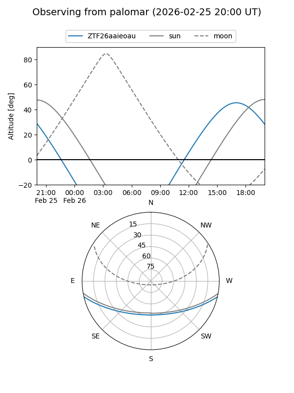

ZTF26aaieoau
Target ZTF26aaieoau at 2026-02-25 13:53
Aliases and brokers:
FINK: link
Lasair: link
ALeRCE: link
alt names
ZTF26aaieoau (ztf,fink_ztf)
Coordinates:
equatorial (ra, dec) = 294.7967,-11.14288
equatorial (HMS+DMS) = 19:39:11.20,-11:08:34.37
galactic (l, b) = (28.2000,-15.58905)
Flags:
Photometry:
last ztfr=18.78
1 ztfr detections
Lightcurve

Visibility


Additional plots